This section describes the features of PTP the enable the developer to monitor activity on target parallel machines, to monitor job status, and to terminate jobs. It will cover the following topics:
The Parallel Runtime perspective is used to monitor the status of target parallel systems and the parallel jobs that are running on these systems. At least one resource manager must be active to see anything in the views. See configuring resource managers for information on setting up resource managers and launching parallel programs for how to launch a parallel program.
The perspective provides four main views for monitoring systems and jobs: Resource Managers view; Machines view; Jobs view; and Process Details view. Each of these views will be discussed in more detail below.
To open the Parallel Runtime perspective, select Window > Open Perspective > Other ... and choose Parallel Runtime from the list.
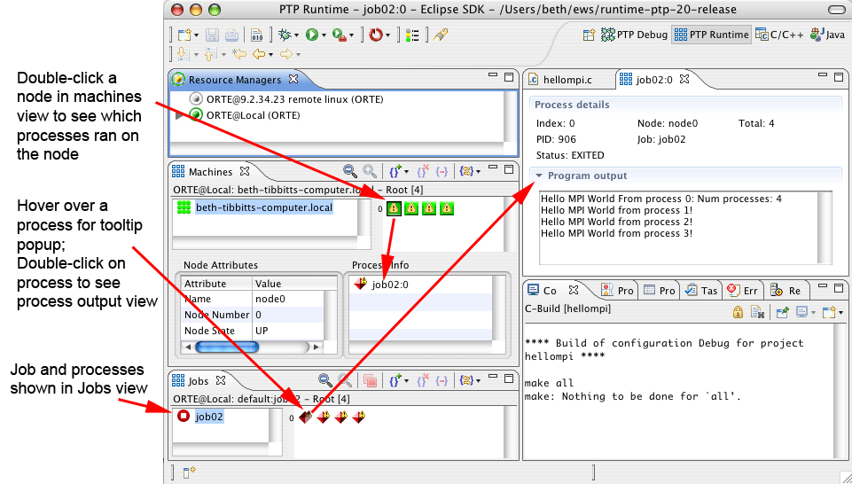
The Resource Managers view shows all resource managers that have been configured, and is used to manage and control these resource managers. Each resource manager has an icon and a name. The icon color indicates the current state of the resource manager. The following image shows two resource managers, one that is stopped and one that is running. A stopped resource manager is know to the system, but is not providing any information to PTP. A running resource manager is the normal state, and indicates that PTP is receiving information and can launch jobs using the resource manager.
| 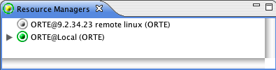 | 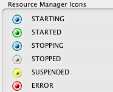 |
The view can also be used to create new resource managers, edit or remove resource managers, and control resource manager opertaion. Right-click in the view to access these functions.
Note that if a resource manager is removed and re-added, the launch configurations using the original resource manager must be changed to use the new one, even if it has the same name.
The Machines view shows the status of all machines being controlled by running resource managers. The upper left-hand panel of this view shows a collective list of all machines known by all the resource managers. A machine is represented by an icon and an address. The icon represents the state of the machine, and the address is typically the hostname of the machine.
Selecting one of the machines in the upper left-handle panel will show the nodes of that machine in the upper right-hand panel of this view. Nodes are represented by an icon only. The icon shows the state of the node. The following image shows a typical view:
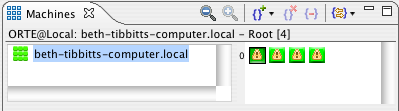
The left edge of the node panel displays the node number of the first node in the row. This is useful for quickly locating a particular node. Also, if there are too many nodes to fit in the display the zoom buttons in the view toolbar can be used to zoom the display.
The machine and node icons indicate the state of each machine and node, as shown in the following image. There are icons representing most typical states. There are also node states that indicate access to the nodes that could be controlled by a job scheduler (user excusive, user shared, etc.) These states are only used by certain types of resource managers.
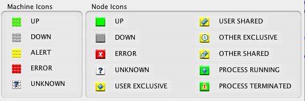
Placing the mouse over a node in the will show information about that node, including the node number, in a tooltip popup.
Double-click on a node icon to display the more detailed information about the node in the lower two panes of the view. The lower left-hand pane will show the detailed attributes of the node, and the lower right-hand pane will show the processes that are running, or have recently run, on the node.
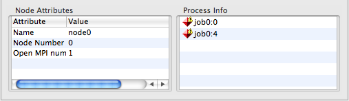
This view shows the current status of jobs in the system. Pending, running, and completed jobs are shown. The actual jobs displayed in this view are resource manager dependent, but will typically be the user's jobs that have been launched by PTP. Some resource managers may show jobs that have been launched using other means, or jobs for all users on the system.
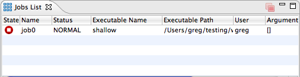
There are icons representing most job and process states. The following image shows the states that can be represented:
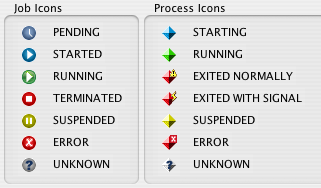
Usually a job will terminate when it finishes executing. However the user can also terminate a job using the terminate button on the toolbar. This button will become enabled when a running job is selected. Clickin on the button will instruct the resource manager to terminate the job. If the job is pending in a queue, then it will normally be removed from the queue.
Depending on the functionality of the resource manager, PTP can also display standard output from the parallel program. This output is displayed in a Console View as shown below. Output is only displayed in this view if the Display combined output in a console view option was selected in the job launch configuration (see Launching Parallel Programs).
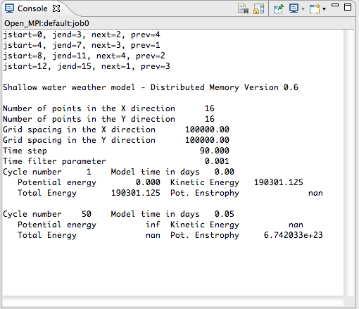
Output from individual processes can also be viewed by double-clicking on a process icon in the Machines view. This will open another view showing the process output. An example is shown below.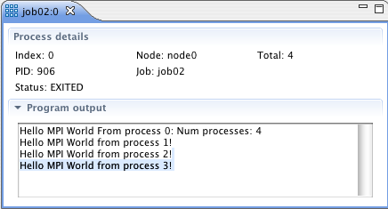
There are many different icons representing the state of the various components of the parallel system. If you need to identify a particular icon, click on the legend icon 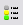 in the toolbar. This will open a dialog that shows all the icons and their meanings. An example is shown below.
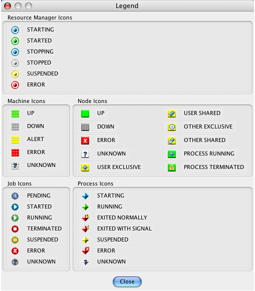